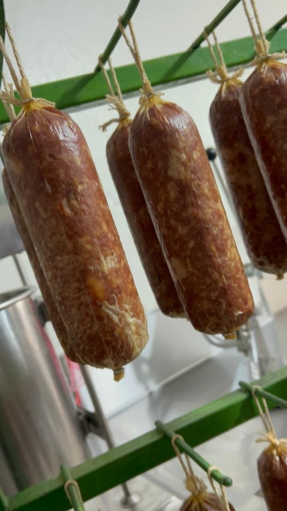
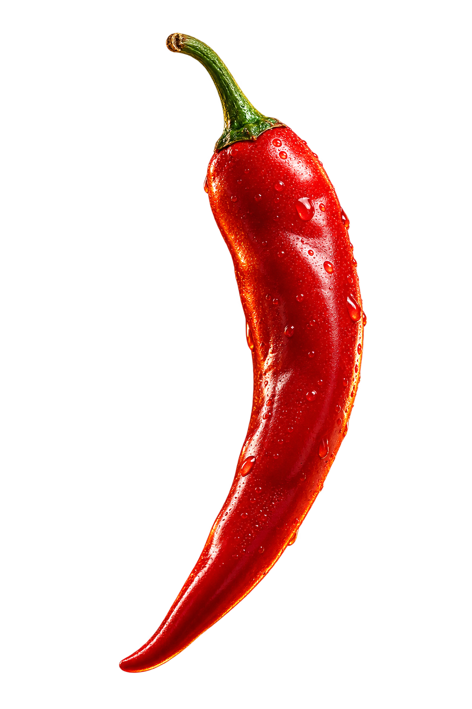
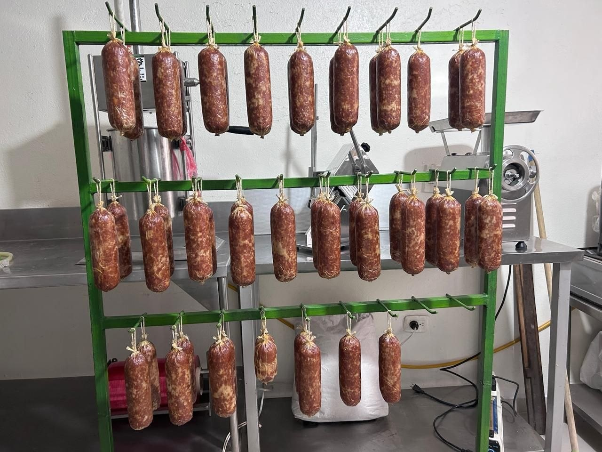
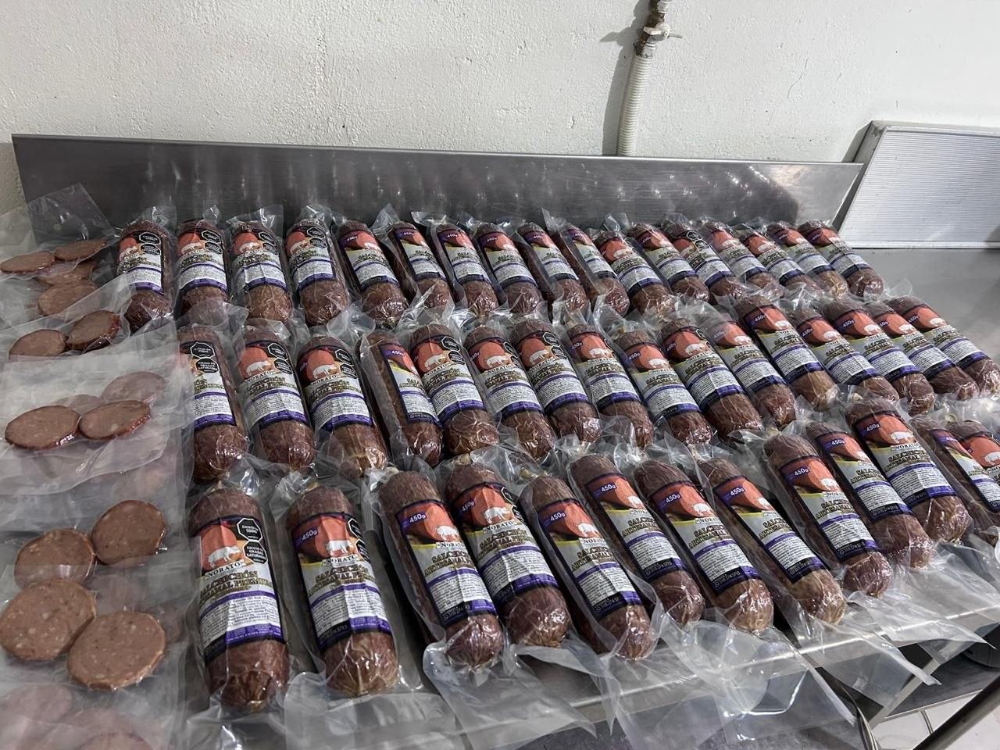

Variedad 01 · Carácter Directo
Picante

Picante
sin pedir permiso.
Un bocado que despierta la mesa: intenso, cálido, con ají rojo y el toque justo de pimienta que invita a seguir compartiendo.
Pedir Picante por WhatsApp ↗La experiencia
Primero llega
el aroma ahumado.
Después, el corte firme y el calor del ají. Picante está pensado para quienes disfrutan de un embutido auténtico, ahumado con leña de roble y elaborado a mano sin atajos.
Rojo · vivo · memorable
Ideal para pan tostado de masa madre, tabla con quesos madurados o una buena charla entre amigos.
Del secadero a la mesa
El oficio de cerca.


Fotografías reales del taller artesanal Norato: tripa natural, atado con hilo y maduración lenta.
También puedes probar